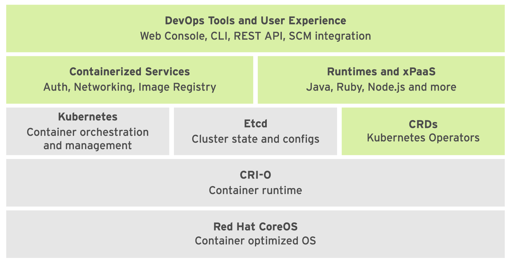

1
Deploying and Managing Applications on an OpenShift Cluster¶

- 红帽 CoreOS: 是 OpenShift 运行时所基于的基础操作系统。是一种 Linux 发行版， 专注于为容器执行提供不可变的操作系统。
- CRI-O: Container Runtime Interface (CRI)是一种 Kubernetes 容器运行时接口 (CRI) 实施，以支持使用兼容开放容器项目 (OCI) 的 运行时。CRI-O 可以使用符合 CRI 的任何容器运行时，例如: runc(由 Docker 服务使用)或 rkt(来自于 CoreOS)。
- Kubernetes: 管理运行容器的物理或虚拟主机集群。它使用资源描述由多种资源组成的多容器应 用，以及它们的互连方式。
- 自定义资源定义 (CRD): 自定义资源定义 (CRD) 是存储在 etcd 中并由 Kubernetes 管理的资源类型。这些资源类型构成 了 OpenShift 管理的所有资源的状态和配置。
- 容器化服务: 容器化服务承担许多 PaaS 基础架构职责，如联网和授权。RHOCP 将 Kubernetes 的基本容器 基础架构和底层容器运行时用于大部分内部功能。也就是说，大部分 RHOCP 内部服务作为由 Kubernetes 编排的容器运行。
- 运行时和 xPaaS: 运行时和 xPaaS 是可随时供开发人员使用的基础容器镜像，各自预配置了特定的运行时语言 或数据库。xPaaS 产品是 JBoss EAP 和 ActiveMQ 等红帽中间件产品的一组基础镜像。红帽 OpenShift 应用运行时 (RHOAR) 是针对 OpenShift 中云原生应用优化的一组运行时。可用的应 用运行时有红帽 JBoss EAP、OpenJDK、Thorntail、Eclipse Vert.x、Spring Boot 和 Node.js。
- DevOps 工具和用戶体验: DevOps 工具和用戶体验:RHOCP 提供 Web UI 和 CLI 管理工具，以用于管理用戶应用和 RHOCP 服务。OpenShift Web UI 和 CLI 工具从 REST API 构建，后者可通过 IDE 和 CI 平台等外 部工具加以利用。
重要的资源类型¶
Routes（路由） 是可被 OpenShift 路由器识别为集群中部署的 各种应用和微服务 入口点的 DNS 主机名。
OC 创建应用¶
OpenShift 主要支持以下几种 部署容器化应用 的方法：
1. Source to Image(S2I) BUILD¶
该方法将整个生命周期委派到 OpenShift 集群：包括克隆 Git 存储库，构建容器镜像，并将它部署到 OpenShift 集群。 S2I takes application source code from a Git repository, combines it with a base container image, builds the source, and creates a container image with the application ready to run. 这里Github 中的源代码没有 Dockerfile。
oc new-app \
--code \
--strategy source \
https://github.com/RedHatTraining/DO288/tree/main/apps/apache-httpd
If creating a Source build, new-app attempts to determine which language builder to use based on the presence of certain files in the root of the repository: 比如，根部文件夹有app.json或者package.json，就会被自动检测为nodejs。
After a language is detected, new-app searches the OpenShift server for image stream tags that have a supports annotation matching the detected language, or an image stream that matches the name of the detected language. If a match is not found, new-app searches the Docker Hub registry for an image that matches the detected language based on name.
我们也可以覆写nodejs，自定义语言类型，这里就要用到镜像流（Image Stream），以方便对所生成的镜像的管理。以下 3 种方法都会得到同样的结果：
oc new-app myis~http://gitserver.example.com/mygitrepooc new-app -i myis http://gitserver.example.com/mygitrepooc new-app -i myis --strategy source --code http://gitserver.example.com/mygitrepo
~ VS --image-stream (-i)
波形符 (~) 和 --image-stream (-i) 选项工作方式不同，-i 选项要求在本地安装 git 客戶端，因 为语言检测需要克隆存储库，从而能检查项目，而波形符 (~) 表示法则不会这样。
导入镜像流¶
要创建镜像流，最简单的方法就是使用带有--confirm 选项的 oc import-image 命令
oc import-image myis --confirm \
--from registry.acme.example.com:5000/acme/awesome --insecure
2. Dockerfile BUILD¶
这里Github 中的源代码包括一个 Dockerfile。
oc new-app \
--code \
--strategy docker \
http://gitserver.example.com/mydockerfileproject
--strategy旗帜
用 --strategy旗帜明确区分方法 (1)S2I BUILD 和 (2)DOCKER BUILD:
- --strategy source确保使用 S2I，base image 要么由 OC 检测当前编程语言，要么由用户通过-i制定
- --strategy docker确保使用 repo 中
3. 现有的 镜像 直接部署¶
某个registry中已存在创建好的 容器化应用/镜像
oc new-app \
--docker-image \
registry.access.redhat.com/rhel7-mysql57
--docker-image旗帜实现
oc new-app 其他可用旗帜¶
| 选项 | 描述 |
|---|---|
--as-deployment-config |
配置 oc new-app ，以创建 DeploymentConfig 资源而非 Deployment 资源。 |
--image-stream （-i ） |
提供镜像流以用作 S2I 构建的 S2I 构建器镜像或用来部署容器镜像。 |
--strategy |
docker 或 pipeline 或 source |
--code |
提供指向要用作 S2I 构建输入的 Git 存储库的 URL。 |
--docker-image |
提供指向要部署的容器镜像的 URL。 |
--dry-run |
设置为 true，以显示操作结果而不执行该操作。 |
--context-dir |
提供要视为根的目录的路径。 |
--name |
给部署一个名字 |
-e |
给Application Pod定义环境变量 |
--build-env |
给Builder Pod定义环境变量（即在构建过程中需要的） |
OpenShift 4.6
OpenShift 4.6 中，oc new-app 命令现在默认生成 Deployment 资源，而不是 DeploymentConfig 资源
OC的Web 控制台¶
Web 控制台不提供完整的集群管理功能。这些功能通常需要使用 oc 命令。
Build Config的详情⻚面提供 Details、YAML、Builds、Environment 和 Events 选项卡，以及含有 StartBuild操作的Actions按钮。该操作的功能与oc start-build命令相同。如果应用源代码存储库未配置为使用 OpenShift Web hook，那么在将更新推送至应用源代码后，您 需要使用 Web 控制台或 CLI 来触发新构建
用户类型¶
- 集群管理员/Cluster Administrator: 管理项目、添加节点、创建持久卷、分配项目配额，以及执行其他集群范围的管理任务。
- 项目管理员/Project(Namespace) Administrator: 管理项目中的资源、分配资源限额，并且向其他用戶授予查看和管理项目资源的权限。
- 开发者/Developer：管理项目资源的一个子集。该子集包括构建和部署应用所需的各种资源，如构建和部署配置、持久卷声明、服务、机密和路由。开发人员无法针对这些资源向其他用戶授予任何权限，也无法管理大多数的项目级资源(如资源限制)
Debug¶
| 命令类型 | 具体命令 |
|---|---|
| 状态信息（status） | oc status oc get |
| 资源描述（resource description） | oc describe oc get -o |
| 日志信息（log） | oc logs |
describe VS get
oc describe可以显示资源的相关详细信息oc get只会显示与所请求资源相关的信息，比如oc get deployment只会显示与deployment相关的，不会显示build相关
模版¶
| 命令 | 描述 |
|---|---|
oc get template -n openshift |
查看OpenShift提供的模版 |
oc create -f ~/php-mysql-ephemeral.json -n common-project |
在名为common-project的Project中，用给出的json文件新建一个template |
oc new-app --template common-project/php-mysql-ephemeral -p DATABASE_USR=user1 -n my-project |
其中的-p表示该template中的参数/parameter |
一般来说，我们鼓励大家在公用的项目（比如这里的common-project）中添加模版，以方便在私人的项目中（这里的my-project）对其进行共享和重用 |
其他命令¶
| 命令 | 描述 |
|---|---|
oc status |
|
oc logs echo-555xx | tail -n 3 |
|
oc logs echo-555xx | head -n 3 |
|
oc describe bc echo |
|
oc describe is echo |
|
oc start-build bc echo |
|
oc delete all -l app=echo |
|
oc cp frontend-1-zvjhb:/var/log/httpd/error_log \ /tmp/frontend-server.log |
copy the log in the Container to local pc 注意： oc cp命令需要基础应用容器镜像提供tar命令，以便能正常发挥作用。如果应用容器内没有安装 tar，那么oc cp会失败。注意： <Pod名>:<文件路径> |
oc rsync |
oc rsync命令可使本地文件夹与正在运行的容器中的远程文件夹同步。它会使用本地rsync命令 来减小带宽使用量，但无需容器镜像提供 rsync 或 ssh 命令。 |
oc rsh oc rsh -t frontend-1-zvjhb oc rsh frontend-1-zvjhb ps ax |
创建远程 shell 以执行容器中 的命令。该命令会使用 OpenShift 主控机 API 来创建通向远程容器集的安全隧道 |
| `` | |
| `` | |
| `` |